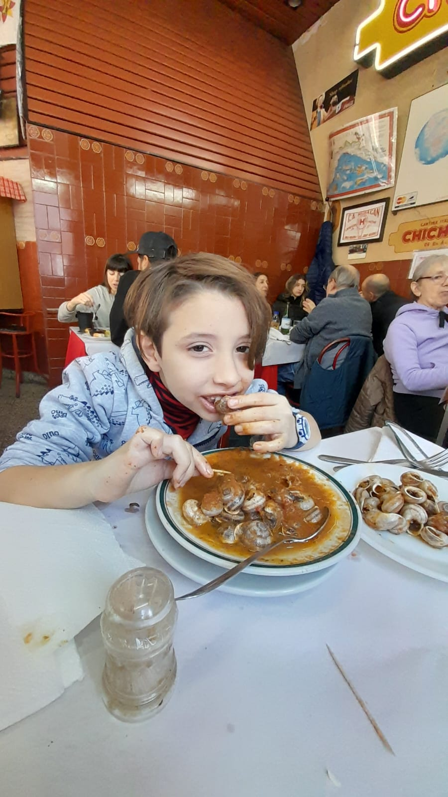

CANTINA CHICHILO DE BUENOS AIRES
Sobre nosotros
Cantina Chichilo de Buenos Aires desde hace 65 años al servicio del buen comer atendidos por sus dueños en un barrio de famosos "La Paternal". Además la producción de Pol-Ka la eligió para la apertura de la novela Ilusiones y El Sodero de mi Vida, además es el lugar preferido de Diego Maradona
La elegida por Pol-Ka para las mejores producciones "El Sodero de mi Vida" - "Ilusiones" - "Mujeres Asesinas"
La elegida por Pol-Ka para las mejores producciones "El Sodero de mi Vida" - "Ilusiones" - "Mujeres Asesinas"
Ganadora de los premios Clarín y Martín Fierro 2005
- MONDONGO A LA ITALIANA
- CALAMARETTIS A LA ESCARPETTA
- FUSILES AL FERRETTO
- RANAS A LA PROVENZAL
- CARACOLES A LA BORDALEZA
- RABAS A LA CALABRIA
- MERLUZA AL AJILLO
- GAMBAS AL AJILLO
- MONDONGO A LA ITALIANA
- RABAS A LA CALABRIA
- FUSILES CON BROCOLIS, ANCHOAS, GARBANZOS Y HONGOS
- POSTRE CHICHOLINA
- TIRAMISU CALABRES
Horarios de atención
- Abierto de jueves a sábados de noche- sábados y domingos almuerzos.
- Horario cena-de 20.30 a 23.30 hrs.
- Horario almuerzo-de 12.30 a 14.30 hrs.
- Camarones 1901- CABA - @cantinachichilook
Imagenes
